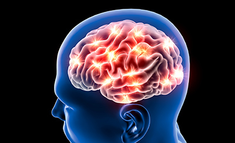

What Is Neurological Physical Therapy?
Neurological physical therapy is a specialized area of rehabilitation focused on restoring function, improving mobility, and enhancing quality of life for individuals living with conditions that affect the brain, spinal cord, or peripheral nervous system. Unlike orthopedic physical therapy, which primarily addresses injuries to muscles, bones, and joints, neurological rehabilitation targets the movement impairments that arise when the nervous system itself is damaged or degenerating.
At Resolve Physical Therapy in Bend, Oregon, our approach to neurological rehabilitation is grounded in the principle of neuroplasticity, the brain's remarkable ability to reorganize itself by forming new neural connections throughout life. Research has demonstrated that intensive, task-specific, and repetitive physical therapy can drive neuroplastic changes that improve motor function even years after the initial neurological event. Whether you are recovering from a stroke, managing the progressive symptoms of Parkinson's disease, or adapting to life with multiple sclerosis, our Doctors of Physical Therapy design individualized treatment programs that harness neuroplasticity to help you achieve your functional goals.

Every neurological rehabilitation session at Resolve Physical Therapy is conducted one-on-one with your therapist. This is especially important in neuro rehab, where the complexity of each patient's presentation requires the therapist's full attention to assess movement quality, adjust exercises in real time, provide hands-on assistance when needed, and ensure safety throughout the session. There are no hand-offs to aides and no shared treatment sessions. Your therapist knows your history, your goals, and your progress, and every minute of your appointment is focused on moving you forward.
Conditions We Treat
Our neurological rehabilitation program addresses a range of conditions affecting the central and peripheral nervous systems. Each condition presents unique challenges, and our therapists tailor their approach based on the specific neurological diagnosis, the stage of the condition, and your individual functional goals.
Parkinson's Disease
Parkinson's disease is a progressive neurological condition that affects movement, balance, and coordination. Common symptoms include tremor, rigidity, bradykinesia (slowness of movement), postural instability, and shuffling gait. Physical therapy for Parkinson's disease focuses on maintaining and improving mobility through targeted exercises that address the specific movement impairments associated with the condition. Our approach includes amplitude-based training to counteract the tendency toward smaller, slower movements, balance and fall prevention exercises, gait training with attention to stride length and arm swing, and functional mobility training for everyday activities such as getting in and out of chairs, turning in bed, and navigating obstacles. Research shows that regular, intensive exercise can have neuroprotective effects in Parkinson's disease and significantly improve quality of life.
Stroke Recovery
Stroke occurs when blood flow to a part of the brain is interrupted, causing brain cells to die and resulting in a range of physical, cognitive, and communication deficits depending on the location and severity of the stroke. Physical therapy is a critical component of stroke recovery at every stage, from acute care through long-term community reintegration. At Resolve Physical Therapy, our stroke rehabilitation program focuses on retraining movement patterns through task-specific practice, improving upper and lower extremity strength and coordination, restoring balance and reducing fall risk, retraining gait to achieve the safest and most efficient walking pattern possible, and building the endurance needed to participate in daily activities and community life. The brain's capacity for neuroplastic recovery is highest in the first three to six months following a stroke, but meaningful improvements can continue for years with the right rehabilitation program.
Multiple Sclerosis
Multiple sclerosis (MS) is an autoimmune disease in which the immune system attacks the myelin sheath that insulates nerve fibers, disrupting communication between the brain and the body. MS can cause a wide range of symptoms including fatigue, weakness, spasticity, balance impairment, numbness, and difficulty walking. Physical therapy for MS is focused on maintaining function, managing symptoms, and adapting to changes as the disease progresses. Our treatment approach includes aerobic and resistance exercise programs designed to improve strength and cardiovascular fitness without triggering symptom exacerbation, balance training to reduce fall risk, stretching and mobility exercises to manage spasticity, fatigue management strategies, and gait training with or without assistive devices. Exercise has been shown to be safe and beneficial for people with MS, improving physical function, reducing fatigue, and supporting mental health.
Traumatic Brain Injury
Traumatic brain injury (TBI) occurs when an external force causes damage to the brain, resulting in physical, cognitive, emotional, and behavioral changes. TBI ranges from mild concussions to severe injuries with lasting impairments. Physical therapy for TBI addresses the motor and balance deficits that often accompany brain injuries, including difficulty with coordination, balance, walking, and performing everyday tasks. Our treatment includes vestibular rehabilitation for dizziness and balance problems (frequently associated with TBI), progressive strengthening and endurance training, dual-task training to improve the ability to perform physical activities while managing cognitive demands, and functional mobility training tailored to your home and community environment. We work collaboratively with other members of your healthcare team, including neurologists, neuropsychologists, and occupational therapists, to ensure comprehensive care. If you experience dizziness or balance problems following a head injury, our vestibular and balance therapy program may also be beneficial.
Peripheral Neuropathy
Peripheral neuropathy is a condition affecting the peripheral nerves, most commonly in the hands and feet, causing symptoms such as numbness, tingling, burning pain, and muscle weakness. Common causes include diabetes, chemotherapy, autoimmune diseases, vitamin deficiencies, and idiopathic (unknown) origin. Physical therapy for peripheral neuropathy focuses on improving balance to reduce fall risk (a significant concern when sensation is impaired), strengthening the muscles of the lower extremities to compensate for nerve-related weakness, desensitization exercises to manage pain and hypersensitivity, and education on foot care and fall prevention strategies. For patients with diabetes-related neuropathy, our exercise programs are designed to also improve blood sugar management and cardiovascular health.
Our Approach to Neurological Rehabilitation
At Resolve Physical Therapy, our neurological rehabilitation program is built on current research and clinical best practices. We use a combination of evidence-based treatment strategies, each selected and adapted to your specific condition, functional level, and personal goals.
- Functional mobility training — Practicing the real-world movements that matter most to you, such as getting out of bed, standing from a chair, walking through your home, climbing stairs, and navigating uneven terrain. We break complex movements into manageable components, train each component, and then integrate them into fluid, functional movement patterns.
- Balance and coordination exercises — Neurological conditions frequently impair the balance systems that keep you upright and stable. Our balance training programs challenge your visual, vestibular, and proprioceptive systems in progressive, controlled ways to improve your stability and reduce your risk of falls. This includes static and dynamic balance activities, perturbation training, and dual-task exercises that challenge balance while performing cognitive tasks.
- Gait training — Walking impairments are among the most functionally limiting consequences of neurological conditions. Our gait training programs address stride length, step symmetry, walking speed, cadence, arm swing, foot clearance, and energy efficiency. We use verbal and tactile cueing strategies, visual targets, rhythmic auditory stimulation, and task-specific practice to help you walk as safely and efficiently as possible, with or without assistive devices.
- Strength and endurance building — Neurological conditions often lead to muscle weakness and deconditioning that compound movement difficulties. Our strengthening programs are designed to target the specific muscle groups most affected by your condition while building overall cardiovascular endurance. We carefully dose exercise intensity to maximize strength gains without triggering fatigue or symptom exacerbation, particularly important for conditions like MS where overheating and fatigue can temporarily worsen symptoms.
- Cognitive-motor integration — In everyday life, physical tasks rarely occur in isolation. You walk while talking, carry objects while navigating through a crowded space, or think about your grocery list while climbing stairs. Neurological conditions can make these dual-task activities particularly challenging. Our cognitive-motor integration training systematically combines physical exercises with cognitive tasks to improve your ability to manage real-world demands safely and confidently.
Benefits of Neurological Physical Therapy
Patients who participate in neurological physical therapy at Resolve Physical Therapy consistently experience meaningful improvements across multiple dimensions of function and well-being:
- Improved mobility and independence — Neurological PT helps you move more safely and efficiently, reducing your reliance on others for daily activities and allowing you to maintain your independence for as long as possible.
- Reduced fall risk — Falls are a leading cause of injury and hospitalization for people with neurological conditions. Our targeted balance and gait training programs significantly reduce the risk of falls and the fear of falling that can lead to activity avoidance and further deconditioning.
- Better management of progressive conditions — For conditions like Parkinson's disease and MS, physical therapy helps you stay ahead of the disease progression by maintaining strength, mobility, and function at the highest possible level and providing strategies to adapt as your condition changes.
- Enhanced quality of life — Beyond physical improvements, neurological PT supports your overall well-being by reducing pain, improving sleep, boosting confidence, and helping you stay engaged in the activities and community life that give your days meaning. Living in Bend, Oregon means access to an extraordinary natural environment, and our goal is to help you continue enjoying it.
- Caregiver support and education — We provide education and training to your family members and caregivers so they can safely assist you with mobility and exercises at home, reducing caregiver strain and improving the quality of support you receive outside the clinic.
Frequently Asked Questions
Neurological physical therapy is a specialized branch of physical therapy focused on the evaluation and treatment of individuals with movement disorders caused by diseases or injuries of the nervous system. This includes conditions such as stroke, Parkinson's disease, multiple sclerosis, traumatic brain injury, and peripheral neuropathy. Neurological physical therapists use evidence-based techniques to improve mobility, balance, coordination, strength, and overall functional independence.
Physical therapy should begin as soon as possible after a stroke, ideally within the first 24 to 48 hours while still in the hospital. Early mobilization has been shown to improve outcomes and reduce the risk of complications. Outpatient physical therapy at Resolve Physical Therapy typically begins after hospital discharge and any inpatient rehabilitation stay. The brain's neuroplasticity is highest in the first three to six months following a stroke, making early and intensive rehabilitation particularly important for maximizing recovery.
While physical therapy cannot cure or stop the underlying progression of Parkinson's disease, research consistently shows that regular, targeted exercise and physical therapy can significantly improve motor function, balance, gait, and quality of life for people with Parkinson's. Exercise has been shown to promote neuroprotective effects, including increased production of brain-derived neurotrophic factor (BDNF), which supports the health and survival of neurons. Starting physical therapy early in the disease process and maintaining a consistent exercise program are key to maximizing these benefits.
No. Oregon is a direct-access state, which means you can schedule an evaluation with a physical therapist at Resolve Physical Therapy without a physician referral. However, if you are being treated by a neurologist or other specialist for your condition, we encourage coordinating care between providers to ensure the best possible outcomes. We are happy to communicate with your medical team to align your physical therapy goals with your overall treatment plan.
Schedule Your Neurological Evaluation
Take the first step toward improved function and independence. Our Doctors of Physical Therapy are ready to create a personalized neurological rehabilitation plan for you.
Schedule Your Evaluation